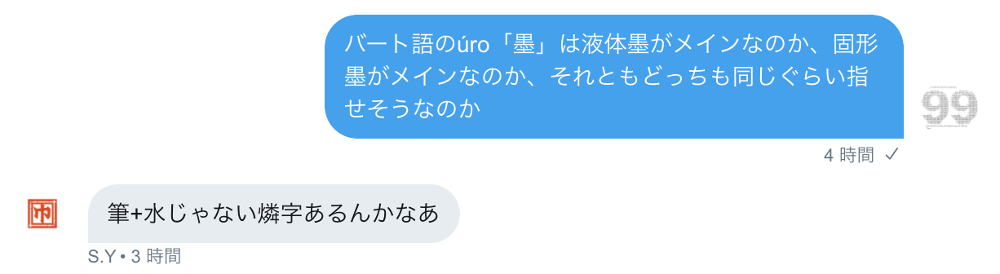
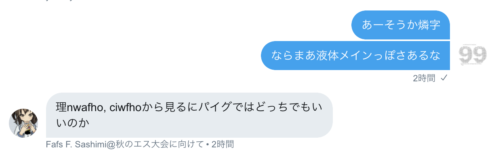
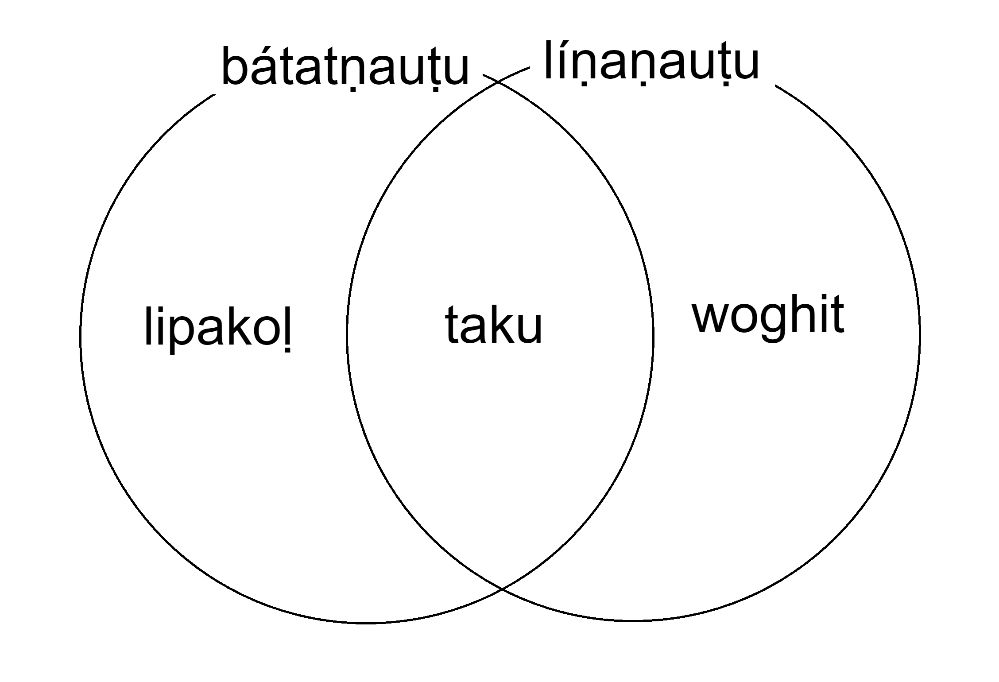

とりとめなく造語をしていったpart2とは異なり、part1と同様、お題を決めてそれの翻訳をメインにやっていこう。
今回のお題は「空が燃える理由」と「国際共産主義活動よ、連合せよ」である。リパライン語の勉強が捗りそうである。
実はまともに読んだことが無いのである。今から読もう。
…直前の「リナエストの指折り」の方がバート人好きそうじゃない？こっちにしよう。心変わりが無限に早いのがj.vのj.vたる所以なのだから（は？）
ban mi-ss-en tonir l'-es birle-en alefis io /
? 私-PL-ADJ 神 LEX-である 恵み-ADJ アレフィス 〜において /
我々の神、恵みのアレフィスにおいて
linaest-e-'d lena-∅ estj sniejus-on lkurf. /
リナエスト-EPE-GEN 学者-NOM 聖なる-J 集合する-ADV 話す /
リナエスト人の聖学者が集まって話し合っている。
"mi-ss-eu-∅ kin-on kinfit m-elx cene niv kinfit / loler mors-∅
私-PL-∅-NOM 指で示す-ADV 数える そして-ELX できる 〜ない 数える / 多い 物-ACC
「我々は指折りで数えると多くのものが数えられないが、
p-elx mi-ss-eu-∅ gentuan tuan-o-∅ jol de." /
しかし-ELX 私-PL-∅-NOM 忘れる 記憶する-NMLZ-ACC だろう (位相.M) /
(だからといって、数を覚えた)記憶は忘れる」
"lys, farfel-el leus kinfit melx jol is la_lex-∅. /
確かに 普通-の仕方 〜を使って 数える そして-ELX だろう なる LALEX-DAT /
「然り、普通の方法ではそのようになるでしょう。
pa, liexyt-i-'s lex kin dieniep-'i furnkie m-elx, /
しかし 指-EPE-NOM LEX 指で示す 数値-ACC 変える そして-ELX /
しかし、指で表す数字を変えれば、
cene dirs jol kinfit de lu vatimel-j" /
できる (位相.M) だろう 数える (位相.M) (位相.丁寧) 更に-J /
更に多くの数が数えられます。」
lena-stan-∅ senost-on lkurf ny_la_lex-∅ liaxa. /
学者-定性-NOM 聴く-ADV 話す NLL-ACC PRF /
それを聞いて学者は次のように言った。
"mi-ss-∅ vaxelf denep-e-'d dieniep-e-'c qa-tva-'i m-elx, /
私-PL-NOM 追加する 桁-EPE-GEN 数-EPE-DAT 二-倍-ACC そして-ELX /
「桁の数のそれぞれに二を掛けていけば
cene kinfit an-dqa_pan-∅ selsta ledyd leus." /
できる 数える 十倍-三_一(=31)-ACC 片方の 手 〜を使って /
片手で三十一を数えられる。」
et-'d lena-∅ senoston lkurf ny_la_lex-∅ liaxa. /
他-GEN 学者-NOM 聴く-ADV 話す NLL-ACC PRF /
他の学者が聞いて次のように言った。
"pan-'d liext leus kin an-pan m-elx jol kinfit le loler-rg-erl." /
一-GEN 指 〜を使って 指し示す 十倍-一 そして-ELX だろう 数える (比較級) 多い-EPE-〜する物 /
「一つの指で十通り表せればより多くのものを数えられるだろう。」
si-ss m'-anfi'erlen, es_pesten_fal kinfit-el. /
彼-PL そして-頑張る 習得する 数える-〜のやり方 /
彼ら(学者たち)は努力して、(その)数え方を習得した。 /
liaxa lena-stan-ss-∅ lazzija xalnem-∅ lyme. /
PRF 学者-定性-PL-NOM 発明する すごい物-ACC 〜だと思う /
学者たちは素晴らしいものを発明したと思い、
mal, deliu kvitlearna lyme edixa. /
そして せねばならない 啓蒙する 〜だと思う PRF.PST /
これを(人々に)啓蒙しなければならないと思った。
mag si-ss-∅ m'eski fi'anx-∅, marl-a-'l xel fua kanti-o. /
ゆえに 彼-PL-NOM そして-外にいる 礼拝堂-DAT 街-EPE-終着 向かう のために→ 教える-NMLZ /
このために、彼らは会堂を出て、街へと向かった。
pa, marl-er-ss-∅ niv tuan fai snietij-e-ce-nasch-el. /
しかし 街-〜者-PL-NOM しない→ 記憶する のために→ 困難な-EPE-〜が過ぎる-〜性質を持った-〜のやり方 /
しかし、町民たちはその度が過ぎた難しい数え方を覚えることはなかった。
ny vilarti-ust-'i es mole niv fua la-syk. /
(対義化) 慣れる-動作-ACC 行う すべき 〜しない のために→ NMLZ-たやすくできる /
簡単にするために慣れない方法をするべきでない。
la_lex-∅ veles la sties "linaest-∅ kinfit-el".
LALEX-NOM 〜される NMLZ 呼ぶ（=呼ばれる） 「リナエスト-NOM 数える-〜のやり方」
これを「リナエストの指折り」という。
まあこんなもんか。
うむ、作者による日本語訳以上の情報が特に得られたりはしなかったのである。まあリパライン語のいい練習になったので良しとしよう。
あ、banについては「『ただし』だけど、それは定型句だからあまり意味無いぞ」と言われたし訳出しなくてよさそう。
スキュの詩の形式というのは、↓
○○○○○○○○○○○○ ○○○○○○○○○○○○ ●○○○○○●○○○○○
または
○○○○○○○○○○○○ ○○○○○○○○○○○○ ○○○○○●○○○○○●
のような音節構造であって、●のところの母音が一致する、という形式だそうだ。なかなか緩い形式だ
（TWTにて、2018年6月10日）
 ということで、追記＆英訳に反映。
coin2.htmlの13を回収していなかった。
曲用の説明 人々は立つ その男性は花を摘む。 彼らは試合中にお茶を飲んでいる。 （任意のバートっぽい人名）は（任意のバートっぽい人名）に花をあげる。 関係代名詞の説明 私は、私が読んでいる本を兄弟に与えた。 レシェールはバート語が話されている地域に行きたい。 私が優しいと思っている彼は犬を殺した。
| 既にある | まだない | ||||||||||||||||||||||||||||||||||||||||||||||||||||||||
|
|
あと、レシェールはlexerlなのでlexeḷになるなぁ。
しかし、bhátán zephaとbhátúḷが同根で微妙に紛らわしいので、ユーゴック語にでもしようかなぁ。じゃあ花のやり取りの方にlexeḷを回して、カラムディアに行きたいṣabhahumくんを導入しよう。
「ユーゴック語」はリパ経由ならyrgokk → yúgok…んー、júgokかなぁ。júgokán zepha.
このうち、「人々」はásúkazá（いやまあこれ「人々」じゃなくて「複数の人」だけど）、「男」はkí、「AはBがCだと判断する・AはBをCとみなす」はṣíyáúḷなので、残るは
| 立つ | 牌lo |
| 茶 | tisia.ar, tia2 |
| 食べる・飲む | iam1にはならない気がするんだよなぁ |
| 与える・あげる・授ける | 牌tui2でいい気もするが、まあどうだろう。タカンも参考に決めよう。 |
| 〜されている | んー、どうなんだろうなぁ、guk2ではないとは思うが |
| 優しい | ガチャ→非アイル。うーん。 |
| AはBがCだと判断する・AはBをCとみなす | ká dízá báṣi kit úrajúḷ ema heyázená hem. という例文もあるのでheyáúḷも使えるが、「裁」系統で一つ造語したい。 |
| 犬 | ガチャ→非アイル。むー。 |
| 殺す | ガチャ→非アイル。ええ… |
で、例文は
受け身は暗黙主語で処理。いや実装すべきだけど。
牌tui2はアイルtui「してあげる」だしなぁ。別にそれでもいいんだけど。んー dujúḷ? ḍijúḷ?んーー
藍takina「与える」で作りますかね。dákínúḷですな。「〜(対格)を〜(ghi)に与える」。
早く例文書いちゃいたいし、動詞とかを変えるか（怠慢）。
あ、そうそう、ásúkazáは「人々」ではないという話が出たので辞書にそう書いておいたんだった。というのも、
pai² am zie¹ cet² kaik. ka¹ kak tin¹ zep¹ hue¹, ua pai² ty nua² cue¹ ge a zep¹ tet.
— 机戦/cerke/パイグ将棋/cet2kaik (@cet2kaik) 2018年6月23日
ここで私はcue¹ ge「或等」と書いているが、SYはこれを想定していなかったらしい。cuk²「人」を避ける理由はバート語にあるのではないか、ということでそういう仕様になった。
ずいぶん放置したので、とりあえず久々の造語をやりましょうか。
直前の
| 立つ | 牌lo |
| 茶 | tisia.ar, tia2 |
| 食べる・飲む | iam1にはならない気がするんだよなぁ |
| 与える・あげる・授ける | 牌tui2でいい気もするが、まあどうだろう。タカンも参考に決めよう。 |
| 〜されている | んー、どうなんだろうなぁ、guk2ではないとは思うが |
| 優しい | ガチャ→非アイル。うーん。 |
| AはBがCだと判断する・AはBをCとみなす | ká dízá báṣi kit úrajúḷ ema heyázená hem. という例文もあるのでheyáúḷも使えるが、「裁」系統で一つ造語したい。 |
| 犬 | ガチャ→非アイル。むー。 |
| 殺す | ガチャ→非アイル。ええ… |
に加え、「『青』を訳さないとISDEが訳せないのよな。」ということも知られているのでやっていくか。
ちゃんとログを書いているおかげで造語プロセスが容易に再現できるのが嬉しいところである。まずは「優しい」からやっていくか。
こういう語は語義の変化が激しいので、とりあえず乱数で作ってから近そうな語を同根判定することになる。さてダイス。
z[83/154]→á[101/308]→m[18/353]、zámúḷか、よさそう。
アイルchame「たのもしい；ゆるい」がある。うむこれっぽそう。
別語根が定着しているというパターン面白いですよね。別語根にします。
∅[4/154]→au[300/308]→h[157/353]→á[110/308]、うーん違和感。やり直し。
h[57/154]→u[278/308]→d[219/353]→á[119/308]、やり直し。
c[105/154]→e[233/308]→ṣl[282/353]→じゃあoか。
よしこれにしよう。もちろん単複同形。
同根語見つからないしof uncertain originですな。
「帰ってきたヒトラー」とか「ヒトラー 〜最期の12日間〜」とかを見ていたら、「正義という美味い酒を飲みすぎるなかれ」とかいう表現を思いついたので訳そうかな。
khak「父」はあるのに。祖語*manmanqがbanáman「親、両親」になっちゃったから空白なのよな。
えーと牌pui1、藍pwojei。えーとbhá-…いや、bhaiの可能性があるな。あとそもそも語中判定かもしれない。んーでも語中判定じゃなさそう。lásibhaihomá、ríkabhaihomá、…lom-i-bhaihomáだよな、さて正書法ではどう書くんだろう。
えーはいこれ添詞ですね。名詞が無格なんだから。だからlási bhaihomá、ríka bhaihomá、lomi bhaihomáです
「冠光」でhá aṭam_kádであってhá aṭam_kádaiでないのは、ṣomaúḷが具格ではなく対格を取る方言への配慮、ということにした。
アイルcahu「せきとめる」とcwaho「つかまえる・とらえる・逮捕する」が合流したcahúḷという動詞がありそう。立てた。
一切のきっかけなく唐突に「交換する」っていう動詞が欲しくなった。立てよう。
「二つの位置を交換する」と「古いものを取り除いて新しいもので置き換える」は別動詞な気がする。
前者はアイルbohai、後者はアイルhoteiとなった。えーbhoheúḷと…乱択でゼロ声母。otajúḷ…んーotúḷかな。
これまた唐突に欲しくなった。アイルngaiweo「鋳上げる、鋳造する」だな。gh-...えーkáṇaisaとかあるしghai...んーgháyoúḷかなぁ。
パイグzip1「失う」、アイルziphei「失う」。バートだと「忘れる」なのではと思われる。
『牌 hia1 + 牌 aik2 + 牌 a。パイグ語 aik2 と異なり、バート語kádには「光」の他にもkádúḷ「目立つ」の名詞化として「視線・注目」という意味がある。また、バート語では、「属格 + k」の主格が単体の属格で現れるため、属格接辞が結果として単立できるが、パイグ語ではこれは不可能であり、この位置のaは感嘆詞として解釈される。よってパイグ語 hia1 aik2 a. は「光りたいです。」という意味にしかならない、言うなれば「伐製牌語」である。hi- が x- で借用されているのは、ワート弁の影響である。』
「パイグ人」ではなさそう。属格専用名詞「パイグの」だな。
nautuの方言音にnauṭuがあるんですよね。書いとこう
フィラー。á や há の他には、ea [e̞ːə] とか aḍí [əɖɨː] とかになるんかなぁ。
だいぶ前に考えてたけど辞書に載せていなかった。バート人サイドはelmen'iarsの比較的忠実な音写だと思ってるのだが、Fafs「リパラオネ人、elmen'iarsの借用形だと気づかなさそう。」とのことである。借用あるあるだ。（明るいlは音節末に立てないためシュワーが入るのが特徴的）
格絡みの単語が欲しくなったので、乱択をしたら（複数回の却下を経て）náhozというのが浮かび上がってきた。
さてさて、アイルnahoは「加える,足し算する」だそうだ。なるほどなるほど。主格に「付け加える」行為を指すわけか。バート語の格変化は基本的に語尾しか付かないから適切だな。
しかし、なぜnáhazではないのだろう。
…náhazが「足し算」なのかなぁ。náhozは二重語かなんか。ありそう。
えーnáhúḷ「〜(対格)を〜(ghi)に付け加える」、náhaz「足し算、追加すること、付け加えること、付加」、nához「格変化させること」、náhozúḷ「〜(対格)を〜(具格)の形に格変化させる」か。
「光って跳ねる」ということで、伐kád- + 伐kánagh- で kádakáná となる。
パイグにbe1がありアイツォにnau1があるが、バートには両方あることになった。
これが「なった」のはかなり昔の話なのだが、やっとなった。
こういう「割合名詞」を依存名詞のサブグループに立てたい。
あ、同様に、「2つの目」ríkahomá adha に対して「両目」を表す「目の両方」みたいな割合名詞もありそう。
ṣahe、口語で縮約してṣeかなぁ。アイルcah^iu「二つに分かれる」・sahu「双数」・sahua「二項式」とかと関係があるのだろうか。
んー、アイルで全部uなのと、バートでe終わりの固有の名詞がnautuhomá eしか無いのが気になるな。でもまあ、eはアイルreaeだし、「語末eはなんか変な経路でのみ供給されるので少ない」というのもありうるな。
えー単数形である理由がないので、adhaomá ṣahe「両目」。
品詞名、どうしよう。「抽象的形式名詞」に合わせて「○○的形式名詞」とすべきかな。
j.v 2019/08/23 07:16: センス求む：「～の全て」「～の一部」「～の両方」みたいなのを呼ぶ名称（「○○的形式名詞」みたいなのを想定している）
kpht 2019/08/23 09:56: 選択？
j.v 2019/08/23 15:26: なるほど
kpht 2019/08/23 18:37: 全部も一部もまあ選択かなーって。
j.v 2019/08/23 18:38: 採用かな～
kpht 2019/08/23 18:43: 唯一の案が採用される案件だ。
j.v 2019/08/23 18:44: ここに書いてない私の案が2つぐらいあるがしっくりいっていなかった
kpht 2019/08/23 23:11: こんな合理性重視の命名でよかったかなとは思うけど、まあいいか。
j.v 2019/08/23 23:12: 日本語名なので
「選択的」だと日本語として意味用法がズレそうなので、「選択性形式名詞」にするか。
アイルsitusuが燐字採用されたので、sítである。
「基本色」だったり"basic color terms"だったりという表現は色んな人が色んな用法で使っていて面倒なので、ここでは
としておく。同一の等の中で文法的能力に差がある場合は上級・中級・下級などとする。現代日本語にこの定義を当てはめるなら、「赤」「青」「白」「黒」が一等の上級（「青々と」「赤々と」「白々と」「黒々と」などを持つため）、「黄色」「茶色」が一等の下級であり、「灰色」「オレンジ」「緑」「紫」「ピンク」辺りが二等、「山吹色」「若草色」辺りが三等。英語…への適用は向いてなさそうだが、まあredやらpinkやらが一かつ二等、となるのか？
それはさておき。とりあえず「白」「黒」「黄」はバート語では一等色になりますね。
| 状態動詞 | 名詞属格 | |
| 白 | bházahúḷ | bházau(homá) |
| 黒 | úroúḷ | úro(homá) |
| 黄 | kúcujúḷ | kujacú(homá), kúcú(homá) |
ちなみに「黄」は藍 khaicwi（灰黄色）、kasui (硫黄)との関連が見て取れる。あとuj は バートでは ú に行くことも反映されている。*[kʷəj-sʷəj]みたいな祖形なんだろうか。
一方で「ピンク」はnumíju(homá)しか持たない二等色。
基本的にこれらの色彩体言は属格として体言を修飾する用法しかない。「この時計はピンクです。」は「この時計はピンク色の物体である。」なので kom zíghíṣ numíjuhomá k hem. となる。色そのものについて言及する文、例えば「黄色は白に似ている。」は bhog「色」を修飾した形で用いるので、kúcúhomá bhog bházauhomá bhogi [bʱo̞ːɣi] hína cajakátá. とするのを規範的とする。
あっ bhog + -i は bhogi と綴って [bʱo̞ːɣi] と読むのが普通です。ghが [ɡʱ] であって [ɣ] を持たない話者なら [bʱo̞ːɡi] だけど。
ámみたいなやつ。
áphíyo (マーク, ロゴ, シンボル) < 理afi'orj, bákatú (勇敢な者), bákatúḷ (勇ましい) を足す。 bákat- ~ 藍makutu (勇ましい) は bák- ~ 藍maqui(抵抗する) との関連がありそうだとされている。
バート語創作の最初期からある単語であるákíjamán dhoḷopáná ṣibhaiomá dhárad、なんと辞書に載っていなかったので載せた。えー長いので略称があるべきで、まあ頭韻を踏めるdhoḷopáná dháradかなぁ。
SY「実際共和国って意識そんなにつよくなさそうだしなぁ」
あとは「PMCF」を……lipakoḷは無気音で転写してるし、fの転写はリパライン語から来たときはpediaから見るに無気になるっぽい（phúpenはヴェフィス由来、wephiseはリパライン語由来だけどヴェフィスの影響もあるんでしょ。パイグはphaigaなので有気。）ということでpemecepeだな
2019年1月2日にSYから「アイル首都 天神(藍:makati 東:makati 理:makati / 牌:makati, syt2 tun2 皇:makati,sjuxtun 闇:makati?) バートどうなんだろうなあ」と訊かれた。それに「ふむふむ。まあmakatiかなぁ（どこかの母音が長い可能性はある）。makatiです」と答えている。辞書に載せよう。
は母音が付随しないことを表す記号よな。
そうそう。名前はアウマカーター・ロード (aumakátá rod)( ) 。「傾いた短いやつ」の義。
という記載をしておきながら、これ以外のところに特にこれをちゃんと記録していない。書かねば。
とりあえずcoin3の責務としては、「傾く」という単語を登録しておくことが挙げられるわけだ。ああ、このページの先頭で
と言ったのはなんであったというのか。
とりあえず状態動詞「傾いている」aumúḷがあるのはいいとして、もう一つ ammúḷ「降りる、下降する」がありそう（vernacularに継承した単語は -wm- > -mm が起こっている、みたいなのはおもろいので）。amúḷ「勝っている」も存在するので文法の例示に便利だ。
こういう、「vernacularに継承した単語は -wm- > -mm が起こっている」みたいな話を導入するなら、当然 mot savant の概念が必要になる。
Un mot savant est un néologisme ou un mot dont l’évolution étymologique a été freinée par le contexte socio-historique et qui reste de ce fait plus proche de son étymon. Par exemple, « fragile » est un mot savant dont le correspondant populaire est « frêle ». Plus généralement, la langue savante (marquée de formations savantes) est la langue scientifique issue du latin ou du grec, opposée à la langue populaire ou vulgaire.
― Contenu soumis à la licence CC-BY-SA. Source : Article Mot savant de Wikipédia en français (auteurs)
学識ある人によって人工的な作為で作られたり取り入れられたりした単語は、英語では learned word、フランス語では mot savant、イタリア語では voce dotta、スペイン語では cultismo とか palabra culta と呼ばれて区別される。
― ロマンスという言語―フランス語は、スペイン語は、イタリア語は、いかに生まれたか― 小林標 p. 138
taku とかそうだし、あとまだ辞書に載せていない kaikúḷ とかもそう。
アイルmatutuが（いせにほソースで）真理設定辞書にあるので採用。まあ makutu が bákatúḷ なので、bátat とかでしょうな。「Aの外」などは基準具格になるのもそれはそう。
「外の単語」。さて、nautuはもともとnyautuなので、これとnautuが複合語を成す際にはṇになる。さらにその後ろのtもそり舌化する（口語形nauṭuはここからの逆成なのだなぁ）。問題は、bátatṇauṭuと綴るべきかbátaṭṇauṭuと綴るべきかである。
うーん、語源ベースでtで綴るか。あっそういやbhátnímaṣ辞書に載せとらんかったね。まあ発音の問題があったからなんですけど。
「ラネーメ形態素からなる単語」みたいなのをふわっと表す líṇaṇauṭu。まあ要するに ↓。
これはもう辞書に形態素 -ṇauṭu を載せてよさそう。「nautuの左接被覆形」という形で載せるかな。
ついでに líṇa- も載せてしまおう
パイグ語sy2、アイル語asiuと同根なのは「～(対格)へ石を投げる」という動作動詞であって、「石」はアイルhewe（cf. リパライン語hervianni「石炭」）の方の形態素を取ることにした。
*fue-fueのような形の畳語かなーということで、eeか？語中にゼロ声母のeとか前例がないけど。 というかバート語かなりhiatusを嫌う（母音幹 + 不定詞語尾、母音幹 + -om(á)、間投詞ea、明らかな借用語(elameniác, juecleone, pedia, xízía)）のだがどうなるん。
というか実際に*fue-fueのような形が時間発展したらどうなるの。w-はai, o, áの前でしか確認されてないし、そもそも語中の *f の挙動についてなんもわからん。
[e̞ːje̞ː] となったりするのか？ほんまか？hiatus回避のために頻繁に挿入されるのは -gh- (cf. xághaika, ghitto (これは語頭i回避)) なので…ああ普通にeghiか。
eghiですねeghi。他に無いでしょ。「語末eはなんか変な経路でのみ供給されるので少ない」であったのだし。
あ、そうそう、語頭のゼロ声母のeはjが挿入されるという話…はもう文法書に書いてあった。よしよし。
載せた。
2019年8月〜9月前半あたりにはすでに着想されていたはず。副詞 bháṣ と bhaṣ で文末の動詞以外を挟む形で行うこととする。具体的には
といった形となる。
基本的に dháradúḷ なのだが、「共に移動するために一旦何らかの場所で集まる」という意味の際はcákíkúḷを用いるということにして互換性確保。
9月14日には既に考えてあったが、「なんかちょっとかっこいい感じのケース」という暫定的訳語をどうしようか迷って放置していた。載せた。英語版での説明にも困ったが、とりあえず "a cool but possibly pretentious way of saying 'a box'." ってしておいた。
バート語の定型詩（近日公開予定）の話をする際に、そういや「歌う」が欲しいなとなったので立てた。ṣahúḷである。bhoṣahúḷ「起き上がる, 立ち上がる」を絶対に燐字で
 （満歌）と書いてほしいという気持ちがある。
（満歌）と書いてほしいという気持ちがある。
藍falaaで牌huat1なのでwoghitの仲間であってwáḷaになりそう。足した。
2018年5月26日に既に設定していたのに辞書に載っていない。載せた。一年半前にlin-marnに載せたしこっちにも載ってると思うじゃん。
ユエスレオネ成立直後あたりのバート人人名を提供してほしいと言われたので、人名záwaim, rúkasam, ághim, íditaim と、名詞rúkasa「年老いた女性」・ághi「血」、人名生成接尾辞-itaimを立てた。
ehai-∅ lásij-akátá cekhaihomá aghauṭa
王冠(=アイル共和国)-NOM 統一-3N.PST.PTCP セットカイク-GEN 本
アイル共和国が統一したセットカイクの本
cekhai-∅ ?
セットカイク-NOM ?
セットカイクとは？
cekhai-∅ phaiga nímaṣ-án sáp-akátá núdha-∅ ∅.
セットカイク-NOM パイグの 民族-GEN 古い-3N.PST.PTCP 遊び-∅ [〜である]
セットカイクは、パイグ民族の古い遊びである。
ríka-homá ásúka-∅ ko-dhel z-acai.
二-GEN 人-NOM これ-ACC する-3.REAL.POLITE
二人の人がこれをします。
cekhai-ḍi hína ásúka-zá tcuwo-dhel boh-azá-cai ja dhárad-ele janá-úḷ-∅ ema rij-acainá.
セットカイク-POST 〜に 人-NOM.PL ツウォ-ACC 行く-CAUS-3.REAL.POLITE そして 連合-ACC 作る-INF-POST 〜を 望む-3.PST.PTCP.POLITE
セットカイクにおいては、人はツウォを行かせまして、連合を作ることを望みます。
lási-∅ tcuwo-dhel boh-azá-cai ja ám bháp-akátá lási-∅ tcuwo-dhel boh-azá-cai.
一人の人-NOM ツウォ-ACC 行く-CAUS-3.REAL.POLITE そして 〜でない 〜である-3N.PST.PTCP 一人の人-NOM ツウォ-ACC 行く-CAUS-3.REAL.POLITE
一人がツウォを行かせまして、(その人)でない一人(=もうひとり)の人がツウォを行かせます。
bohú-zá wáḷa dác-akátá.
移動-NOM.PL 互いに互いを 後続している-3N.PST.PTCP
移動は互いに互いを後続する。
bhom-azená núdhabágha-∅ am-akátá ásúka-∅ am-acai.
持っている-3F.PST.PTCP 点数(遊戯+数)-NOM 勝っている-3N.PST.PTCP 人-NOM 勝つ-3.REAL.POLITE
持っている点数が勝っている人が勝利します。
tcuwo, ko-∅ boh-áká ghikísa-∅ hem.
ツウォ これ-NOM 行く-ADV 木の小片-NOM 〜である
ツウォ、これは移動して、木の小片である。
dhárad, ko-∅ núdhabágha-dhel bhom-áká tcuwohome dhárad-∅ hem.
連合 これ-NOM 点数-ACC 持つ-ADV ツウォ-GEN.PL 連合-NOM 〜である
連合、これは点数を持っていて、ツウォたちの連合である。
bhomazená núdhabágha amakátá ásúka amácai. においては、点数を持っているのは双方であるので男女混合の-zená、勝っているのは片方であるので性別不定であって-kátáである。
「古い」はsia1系統ではなくsápúḷを立てる。「古い, 昔からのものである, 伝統的である」なので、「年老いた」方面がsia1系統である可能性はある。
「遊び」もtu2系統でなくnúdha「遊戯」を取る。遊戯を遊ぶ場合はそれの動詞化だが、-ḷor動詞のように-orで語幹拡張された形となった。「点数」はまあ「遊戯の数」よね。
「〜の後ろにいる」dácúḷを立てる。「後ろ」dáṣが立つ気がしてきたので立てとこう。
「木の小片」とかいうだいぶ狭い意味の単語が、アイル語ikisa「積み木」の借用として立った。ghittoでもおなじみghi-借用である。
まああとはlásiの動詞化lásijúḷ、cet2 kaikの借用cekhai。
2020年1月6日に登場。音素配列論的に/paːi̯/が許されないのでこうなる。
38.で立てたので。
藍xoudo「重い」, 牌xo2「重い、重要な」から「多くの」を導出。
上で使ったので辞書に載せた。
2019年6月15日ぐらいからほしいとされていたのに成っていなかった。
アイル語masuni「塗る」、macwe「（燃料を加えて）火を燃やし続ける」を元に液体油。
bacú「液体の植物油」、bácujúḷ「油を注ぐ・油を塗る」だな。
ṣásubhozúḷとなった。同根語なんなんだろう。音節数的に複合動詞っぽいけどなにから構成されるのか？
asíjaúḷです。
スキュリオーティエ・バート語の ka-jə-tu-wa-ñu-vi-ja-ə-ma-a-mə-nə-nu-wəj-su-te-e-le-e-ju-wa-ja-mə-ə-tə [ᵑga.jə.twa.ɲuː.βi.ja.ə.maː.mən.nwəj.zu.dʱeː.le.e.jʷa.ja.mʷəʔ.tə] の現代語訳の一部に出てきたjúpheja amáma núsudhel eyáúḷから未登録語を回収。
スキュリオーティエ・バート語の-a-mʷəʔ-に対応する形。『聞き手にとって既知であることを期待する形』『日本語の「～と思わんかね？」のような感じで文法化している。文法化しており主語が明確なので ema を落としてよいし、普通は落として使う。口語ではまるで [aːmbʱaːʔmuː]という終助詞であるかのように使われるのだろう。正書法上はどう書かれるんだろう。』とか書いてある。
リパライン語falveltaがなぜかfaltveltaになり、それが入るとpautawauta。かわいい。
skurlavenija.mavijaに要求され2020年2月16日に『blohai「独裁、絶対的権力」からバート「法」を導く』案がまとまる。2020年3月8日に再び提起されたことにより造語される。
藍blohaiからはbhoḷog「法」, bhoḷorúḷ「法を定める」（こいつは類推による-ḷor語幹化を喰らった）という派生が生える一方で、藍bohaiと衝突することを考えるとbhoheúḷの形がなるはずである。ということで受動専用動詞bhoheáḷ「法により制限されている」が生えるのである。
-ḷor語幹、文法書にしっかり載せなきゃね
という単語があるはずだという気持ちになったので考える。
藍sulou「ミント」ということで、スチェスナスト、アラザキーフィナツ、ラバスフィナ、フィナツ、フィノストリヴァスンなど一般的に強い芳香を持つ草やその実を指せる単語。それの動詞化なので、「〜(具格)の強い香りで〜(対格)の不快なにおいを隠す」と「〜(対格)の葬儀をする」。名詞はsúḷaだな。
2019年6月16日に『kaik系統は「争う」（人と人が対立し、どちらも自らが優位に立とうと互いと戦う）であって、cet2kaikには使えるが「苦痛や障害を乗りきろうとする。打ち勝とうと努力する」の用法はない。』というメモが残されており、それの解釈として2020年3月4日に『上記の「kaik系統」ってバート語が継承した単語であり、「苦痛や障害を乗りきろうとする。打ち勝とうと努力する」の用法で使っているkaikúḷは要するにアイルかパイグからの借用。』とした。というのも、2019年6月16日以降（具体的には2019年9月）にkaikúḷを「苦痛や障害を乗りきろうとする。打ち勝とうと努力する」の用法で使ったからである。
j.v.氏のバート語訳『勇気のしるし』よかった
— まい/まいさん/MIT@言語垢 (@mai_lang0) 2019年9月14日
kaikúḷに関しては（特に継承であるか借用であるかとかで）まだ考えが固まっていなかったし、ネットの海にも放流していなかったので後回しにしていたが、
『リゲインのテーマ』1番 バート語訳(検索用)
— まい/まいさん/MIT@言語垢 (@mai_lang0) February 27, 2020
kujacú jo úroom bákatúom áphíyo t.
ákíjamán nauḍína kaikúḷ ácahamúná?
lighein, lighein, bhámahomá lighein.
bákatúom áphíyo hemakátá táphíyot.
bháhepaom nauḍína kaikúḷ ácahamúná?
elameniác, elameniác, jápáeoom elameniác.
skurlavenija.mavija氏によりネットの海に放出されてしまったし、まあnヶ月心変わりが無かったのでよさそうともなったので、正式にコーパスに載せることとした。
ああそうなるとjápáeoを非真理設定として載せねばならない。
さて、2020年3月4日解釈によると『バート語が祖先から継承したkaik相当は「争う」（人と人が対立し、どちらも自らが優位に立とうと互いと戦う）』の義だそうだ。aik2がekであることを考えると[k]e[k]辺りになりそうだが、御存知の通りkeは忌避である。ということでkágh-辺りなのだが、ここで-ḷorでない-lorの例として考えていたnaunilorúḷ (藍nyaunei「力強い」 + 藍dili「刺す」と解釈)から接頭辞nauN-を取ってきて、kágh-にくっつけてnauṇághúḷである。と思ったら辞書を書いている最中にnauṇaghúḷと複数回打っていたので（cf. 何度もfaltveltaと入力していたことから成ったpautawauta）、nauṇaghúḷになりました。多分これ一般性あっていつか定式化できるようになるんじゃないかな。
なんか生えた。藍cacheは「発掘する」なのだけど、そこに石をくっつけて「彫刻する」【「掘る」と「彫る」は日本語のみならずアラビア語でも通ずる（حفر）】、そのままだと「深くする；関係を深める」。
さてcazúḷということは短動詞なんですが、えーはいzúḷに従うものとします。
investigate.htmlの93. 名前で「スキュのバート語訳をした人の名を作りたい」「訳者が2人欲しくなったので2人分作る」と言われたのが2018年10月16日。そこから1年5ヶ月が経った。やっと作る。
naunilorúḷの語幹である（単独では息をしていない）dil-からdílitaim、いやdílitamにしよう。もう片方は鳥。ああ鳥やんなきゃね。
もうひとりの方は、えーkoとrúṣ。korúṣam自体はkoとrúṣで書かれるけど実際はkoとrúṣじゃないってやつだ。もう片方えー「広くなる」。
そういやephaúḷ「倒れる」が生えていたな。アイルaipaに「落下する」もあるので、「崩れ落ちる」「位置が下がる」「低くなる」「滴り落ちる」ぐらいの意味用法までは入りそうだな。ものやその重心が低い位置に移動していく動作の動詞というわけだ。
xízía.の省略としてzí.がありそう、ということになった。ピッチ下降の位置が保たれているのがポイントである。
バート語においてnána ... hemという表現は非常に不自然だが、リパライン語同格表現l'esの翻訳として翻訳調では多用される、ということになった。おもろい。
また、2020年4月2日に「xel『向かう』に由来した翻訳的語法」という案が発生。
aḍuhazoúḷ「～（ghi）へ直線的に向かう（翻訳調）」を立てることになるが、別語として立てよう。
jekto.vatimelijuの自己紹介用の文章を前に作ったのと、そのときに「不思議の国のアリス」のタイトルを翻訳したことを思い出したので、載せた。
2019年9月19日に、
*slqna > ṣə̃ ~ ṣən が色々荒らしてくれる。主格ṣán, 無格ṣáni, 対格ṣánel ~ ṣánele, 属格ṣán, 具格ṣánai, 後置格ṣáni かな。
6、ṣ- + lási で ṣási > /ʂaːʐi/ > ṣári か？ 7はṣ- + ríka で ṣíka, -ːríka。 8は ṣə̃ + lom で ṣánom。
話者の意識としては、6が5+1であることは見えづらいので、1, 2, 3, 4, 5, 6, 5+1, 5+2, 5+3 となっているのだなぁ。ところで 4 ってどう言うんですかね。
6 については牌net2由来のnátも状況においては使われているかもしれない。
と書いた。ṣári、「まーーいけるでしょ」とは思うがちょっと不安なので一瞬保留するか。ṣániと紛らわしそう。
あ、ṣáriの方が後置格の類推喰らってṣáriḍi jo なのでは？ありうる。
ṣánomの属格はṣánŏmánかもしれない。だな。複合語だと-ṣanománもありうる。ああ長母音が複合語の前要素の最後に来た時には四連禁で規則的にこうなるのだななるほど。
まあnátは単独の数詞では使わなくていいかな。「六」を含む複合語ってどんなんがあるんだろう。そういや「すごろく」がそうだな。
とりあえずṣíkaとṣánomには一切不満が私の中で出ていないのですぐ載せようと思う。「七」でṣíkahúḷを表す用法とかありそう。「六ヶ敷」だ。
そういやアイルniku（cf. エッツィア）, misa（cf. エッツィア）, iki（cf. エッツィア）, naku（cf. エッツィア、タカン）の系統って使わないんだろうか。タカンと同様9だけこの系統なのかも。
即決するなと心が言っているので即決しない。えー藍n-だからn-、まあná-、あーそういやfokuはwoghitか。
nágh(a|もしかしてi？)(ṣ|t|なんか|ゼロ)か？それともnágか？んー。どっちもあったりする？ほんま？
どっちかが属格専用とかだったりするのか？ほんまか？
保留。というか普通に5+4系統な気もするので（過去ログにはその旨ある）4を考えてからでないと結論は出せない。
5の曲用、ヤバいですよね。どれに対しても違和感を抱かないのがすごいんですが。
まあ要するに、「ṣə̃ ~ ṣən が色々荒らしてくれる。」ということであって、歴史的には「鼻母音幹」みたいな振る舞いをしていたわけですわな。
さて、バートの人名って鼻音終わりであって、かつ斜格への曲用の例がない。
…あれ？辞書には-(a)mの語源が-anlと書いてあるが、文法書には
ってあって、-(a)mの語源って載っていない。祖語辞書にすら-(a)mの語源は載っていない。単に旧文法書に+(a)n/m(<*anl)という記載があるのみである。
-itaim ~ -itamの例も考えるに、-aimの弱形と-anの両方の影響を受けて成立していてどちらか片方のみに由来するとは言えない、ということではなかろうか。
「あれ、-om / -homá とかもあるし属格語尾って-m-も取るのでは」と思われる方もいるかもしれないが、これはbhom-由来であるという説が濃厚であるのだ。
さてさて、いずれにせよ、大事なのはどちらも由来としては連体修飾語であるという話である。結果として人名は連体修飾語としての振る舞いを残して、かつ音声的にも「鼻母音幹」みたいな振る舞いをしうる。ṣánは語幹（そもそもどこが語幹なんじゃろ）が短いのでṣán自体とは異なるかもしれないが、例えば主属同形といった特徴は持っていても全くおかしくない。でもまあ5の曲用の方が確証を持てるので、先に5を確定させる。
あとこの「鼻母音幹」、現代語としては一応「中途半端幹」(naveushousten ftlexest)みたいな名前の方がいい気がしている。まあとりあえず主属同形はdefining featureになりそうなので、「主属同形名詞」というカテゴリーで立てるのがよさそう。
……「主属同形名詞」という視点をもとによく考えると、「5」の曲用って-el / -eleが揺れることのみしか話すべきことがないな。
逆に揺れない主属同形名詞ってあるんだろうか。なんかnonとか主属同形名詞っぽさあるよね。そして揺れなそう。これだ。例文ではnonaiしか使ってないね。
ん？なんかnonelが自然な形として出てきてnoneleに違和感があるぞ。
じゃあそういうことにしよう。
ところでbániwaimありそうなので生やす。
前回は「dílitam ghátu [鳥]」と「korúṣam ghátu [広くなる]」まで決めたんだっけ。
ということで鳥をやらねば。リパライン語辞書には
という少なくとも9種の鳥の名前が確認できる。鳥そのものはketivかsiestor。
あとneydを発見。dyrul発見。jotyp発見。tenierk[tiniki.ar]発見。nalva[nalua.ar]発見。
とりあえず正規表現[鳥-鳳鳵-鹴]（要するに、基本多言語面CJK_Unified_Ideographs内での康煕字典部首「鳥」で「鳴」以外の字）でヒットするのはこれぐらいである。ということでこの上で考えていくか。
厳正なる抽選の結果、
の7種を優待することとする。
2020年4月17日の「第一回リパライン語を考える会」後の雑談で、tarf virl woltsaskaijuが「バート語でフェンテショレーってなんていうの」と訊いてきた。
タカンではmunconciccicuku（


 ）であるので、とりあえず「革命」が
）であるので、とりあえず「革命」が
 cei2 xit2由来のcajxitかな。
cei2 xit2由来のcajxitかな。
「反する」「抵抗する」とかはi2でこれはアイルが知られていなくて、まあnaunij-かなぁ、という気持ちになっているが、一方fente-ってリパライン語だと「～に耐性がある」が第一義に上がっているんだよな。それを翻訳借用してのbákúḷもありえなくはない。
しかしながらnaunij-だろうという気持ちはある。cajxitanaunij-かなぁ。燐字文化語だし「人」を逐語で言ってcajxitanaunijasukaとかなるのかもしれん。うわーバートの香りのしない単語だ。
ところで綴りがなぜcajなんですか？不思議ですね。このjによる綴りについてそもそも載せていなかったので載せた。
gaṇṇí, khaṇṇí, khaṇḍí。語頭gとか-NC-とかはかなり珍しいが、こういうタイプの単語に限って珍しい連続が出るなんて定番だし。
なお、aḍíも含め、これらの単語のaは義務的にシュワー。
厳正なる抽選の結果、
の7種を優待することとする。
あっ今nav[navou.ar]見つけた。
んでさらに抽選の結果、
| tenierk[tiniki.ar] | 固有語 |
| iavnav, nav | 多く供給してくれる言語から借用 |
| fiursiestor | 文章言語から借用 |
| tetien | 固有語 |
| dyrul | 文化的に強めだがそんなに供給してくれない言語から借用 |
| blirba[blibwau.ar] | 多く供給してくれる言語から借用 |
| nalva[nalua.ar] | 固有語 |
とすることになった。とりあえずtiniki.arはdíghiでしょう。tetienは藍taideも考えdhet, その子供がdhedighatだな。このtaideってtetienと関係ありそう。nalua.arはnál-、えーっと、まあnáḷaしかないか。
人名はnalua.ar、つまりnáḷa由来になることになった。náḷawaimですね。
よしこれで片方が決まった。「dílitam ghátu náḷawaim」。さてと「korúṣam ghátu [広くなる]」をやらんといかんですね。
とりあえず片方は dílitam ghátu náḷawaim（ディーリタム・ガートゥ・ナーラワイム）になりました。もう片方は「korúṣam ghátu [広くなる]」が予定されているんですが、「そのうちの少なくとも1人はリパラオネ圏から翻訳借用された姓になりそうです。」と上に書いてあることに気づいたので姓付きで。
— jekto.vatimeliju@hsjoihs@.sozysozbot. (@sosoBOTpi) 2020年5月9日
ということでリパラオネ圏から翻訳借用された姓も載せねばならない。
わが祖国。
後で書く。
2019年12月23日に「正しくないこと」「（理工系の）嘘」の造語提案がなされていた。した。せっかくなので「騙す意図のある嘘」も立てた。
jogの方は藍「盲目的に」と同根で、まあ何らかの見通せなさのニュアンスっぽそう。
2020年6月4日（つい3日前）に着想。ついでに「刃物を研ぐ」も。
zíṣloとなった。-ṣloって動植物周りに付きやすいよね。zíghíṣとも結びつくかもしれない。上から見るとつるの動きって時計の針の動きだし。
対応する語が知られていないことで知られていた燐字、【海】をバートbhodi、アイルpwoutwi としようかなと思った（ポートヴィータシュのポートヴィの部分）（ポート・ヴィータシュではなくポートヴィ・イタシュ）（ヘリ・コプターではなくヘリコ・プター）（キリマ・ンジャロ）
「主格」：ázá、「属格」：ánom、「対格」elesa、「具格」aibhausa、「後置格」dhíná。無格には伝統名はなく、まるで「サ未四已」のように主格と後置格にまたがるものとされていた。
「対格」「具格」につく-saはリパライン語sansであるという民間語源があるが、実際は関係ない。rúkasaにも見られるような（まあこの語においては原義の意味は漂白されていないが）、sáに由来する指小辞、に由来する「無理やり名詞化する」ときに使う辞。
6月29日辺りに
...「状況を理解する」ってcánajúḷなの？新情報が入ってきたタイプのってcánajúḷなの？ ám ghíyo hemáká cánaj bom rakkúḷ. も「塩が必要だ」はすでに知っているけど意識してなかった状態であるって話だよね？
ということでghaccúḷというのが生まれた。よって載せた。
bhodiとghíyoをくっつけると、-ighí-とか縮約しそうなのでbhodíyoです。
塩を入れる木箱を指す語がありそう。塩と水と油で器を表す単語が違います。
SY「穀物穀物」 j.v「たしかに。でも塩と同じ気がする」
ということで、塩および穀物の入る木箱。
nauke.ar「箱」から来てnaukiかな。
よしこれで片方が決まった。「dílitam ghátu náḷawaim」。さてと「korúṣam ghátu [広くなる]」をやらんといかんですね。
とりあえず片方は dílitam ghátu náḷawaim（ディーリタム・ガートゥ・ナーラワイム）になりました。もう片方は「korúṣam ghátu [広くなる]」が予定されているんですが、「そのうちの少なくとも1人はリパラオネ圏から翻訳借用された姓になりそうです。」と上に書いてあることに気づいたので姓付きで。
— jekto.vatimeliju@hsjoihs@.sozysozbot. (@sosoBOTpi) 2020年5月9日
alesの翻訳借用でいいじゃん、となった。
人名の一覧がそろそろほしくなったので建てた。
その過程で「サーム講和条約 - リパライン倉庫」に「bhoman ghátu síbham bhátnímaṣ（ボマン・ガートゥ・ジーバム・バートニーマシュ）」という知らない人名が載っていたので辞書に載せた。ところで「ボマン」ってことは短音なので例外だなぁ。